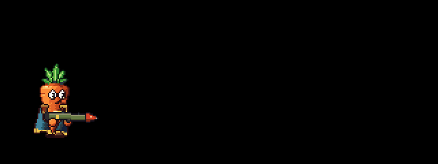
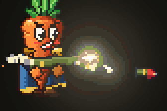

Rocket Launcher
One rocket, one huge explosion, then the slowest reload in the game.
The rocket launcher holds a single rocket. Fire it and it streaks away trailing smoke, then explodes on the first enemy or wall it touches, hurting everything nearby. Then the tube is empty and you wait through the slowest reload of any gun. It's the biggest single hit a carrot has: a direct hit kills most regular enemies outright and takes a real bite out of a boss.

Handling
Loaded, the rocket's red warhead pokes out of the front of the tube; once fired, the tube is bare until the next rocket is in, so you can always see whether it's loaded. It holds 1 rounds rocket.
Firing kicks hard: the screen shakes by 0.5, the tube jumps back 7 px, a gout of smoke and sparks blasts out of the back (the backblast), and you're shoved back along the aim at 140 px/s.
The rocket
The rocket leaves the tube at 160 px/s and speeds up by 900 px/s² to 520 px/s, flying in a straight line along the aim, with a flickering flame and a trail of smoke behind it. It's slow enough to see and to lead a moving target. It explodes on the first enemy or wall it touches; if it touches neither, it goes off after 520 px.
Damage
Every enemy within 56 px of the explosion (measured to the nearest point of its body) is hit for 90 hp at the centre, falling to 0.3 of that at the edge, and is shoved sideways away from it (8x its normal shove at the centre).
The enemy the rocket struck directly also takes the direct hit: 60 hp, times 1.5 on the head, added to its blast damage and shown as one number.
Rocket jumps and self-damage
Your own explosion launches you away from it, up to 380 px/s at the centre: fire at the floor in mid-air for a rocket jump. It also hurts you for 0.3 of the blast damage (with the same falloff), which comes off your shield first. A dash's invincibility dodges it, like any other hit. Set either to zero to turn it off. Your partners are never hurt by your rockets.
Ammo
The launcher uses heavy ammo (see Ammo). You can carry up to 5 rounds rockets, counting the one in the tube, and start a level with 2 rounds. Purple heavy bricks refill it; they're rarer than special ones, and bosses always drop one. With no rockets left the tube stays empty and the trigger just clicks.
Reload
The tube tips up, the off hand fetches a new rocket from the hip, brings it round in front of the muzzle and pushes it in tail first until the warhead seats with a thunk, then slaps the tube to lock it. It takes 2 s, the longest of any gun. See Reloading.

Strategy
- Aim at the ground at an enemy's feet or at a wall beside a group: the blast catches everything nearby even when the rocket misses the body.
- Save it for a pack or a boss. With one rocket and a long reload, swap to another gun right after firing rather than waiting.
- Lead moving targets: the rocket is slow at first.
- Mind the blast at close range: firing point-blank hurts you too.
Co-op
A rocket travels as a single shot message, like a bullet; every machine flies its own copy along the same line and shows the same explosion. Only the shooter's machine works out the damage and reports it to the host, and only the shooter is launched or hurt by their own blast. Partners see whether your tube is loaded.
Design notes
The owner asked for "a rocket launcher that fires one shot and then reloads". The rest are defaults chosen to fit the other guns:
- The direct hit plus a full blast is enough to kill any regular enemy in one shot. Over a reload cycle it does about as much damage per second to one target as the Revolver, but it hits a whole group at once.
- Explosions reuse the pumpkin's fireball, with its flash off and its flames toned down, since a big bright fireball blooms into a white blob that hides the fight.
- It's held at the hip rather than on the shoulder, so the rocket leaves exactly from the drawn muzzle.
- Explosive shots are a general option on any gun (the Explosive settings), so a grenade launcher would only need a new settings file.
Tunable parameters
These are read straight from the game's files, so they are always the current values. Open the file in the Godot Inspector to change them.
Rocket Launcher
Edit styles/weapons/rocket_launcher.tres · fields defined in scripts/weapon.gd
| Parameter | Value | Range | What it does |
|---|---|---|---|
display_name | ROCKET LAUNCHER script default REVOLVER | ||
| Handling | |||
automatic | No | Holding the trigger keeps firing (otherwise it's one shot per click). | |
rounds | 1 rounds script default 6 rounds | 1 to 100 or more | |
reload_time | 2 s script default 0.5 s | 0.05 to 4 or more | |
fire_interval | 0.5 s script default 0.12 s | 0.02 to 2 or more | Seconds between shots (the shotgun's pump time lives here too). |
spread | 0° script default 1.7° | 0° to 34.4° | Random aim wobble per trigger pull: the full width of the cone the whole shot lands in. |
bullet_speed | 160 px/s script default 620 px/s | 100 to 1600 or more | |
max_range | 520 px script default 0 px | 0 to 1500 or more | Bullets vanish after travelling this far (0 = they fly until they hit something or time out). |
| Ammo | |||
ammo_type | 2 script default Ammo.NORMAL | Normal ammo never runs out. Special (green bricks) and heavy (purple bricks) are carried in a limited reserve and refilled by bricks dropped by dead enemies. | |
ammo_max | 5 rounds script default 20 rounds | 1 to 200 or more | The most you can carry, counting what's loaded in the gun (a 6-shell shotgun with 20 holds 6 in the gun and 14 in reserve). Ignored for normal ammo. |
ammo_start | 2 rounds script default 10 rounds | 0 to 200 or more | How much you start a level with, counting what's loaded. Ignored for normal ammo. |
| Pellets | |||
pellets | 1 | 1 to 24 | Bullets per trigger pull. Above 1 it's a shotgun: the pellets fan out across pellet_spread, each one does damage (with falloff), and the pellets that hit the same enemy in a blast add up into one damage number. |
pellet_spread | 0° | 0° to 68.8° | Width of the fan the pellets are spread evenly across (on top of spread). |
pellet_jitter | 0 | 0 to 1 | How far each pellet strays from its even slot in the fan (0 = a perfectly regular fan, 1 = up to a whole slot either way). Same pattern on every machine. |
pellet_speed_jitter | 0 | 0 to 0.6 | Per-pellet speed variation (0.2 = from 80% to 100% of bullet_speed), so the cloud stretches out. |
pellet_merge | 0.05 s | 0 to 0.2 | Pellets that hit the same enemy less than this far apart add up into one hit and one number (they arrive spread out at range). Longer reads better but shows the number a little later. |
| Damage | |||
damage | 60 hp script default 10 hp | 1 to 200 or more | Damage per bullet (per pellet) on the body, at close range. |
headshot_mult | 1.5 script default 2 | 1 to 4 | |
full_range | 100000 px | 0 to 1500 or more | Full damage out to this distance (world pixels)... |
falloff_range | 100000 px | 0 to 1500 or more | ...then it ramps down to falloff_frac of full by this distance... |
falloff_frac | 1 | 0 to 1 | |
far_range | 100000 px | 0 to 1500 or more | ...and on down to far_frac by this distance and beyond. |
far_frac | 1 | 0 to 1 | |
knockback | 2x script default 1x | 0 to 4 or more | How hard each bullet shoves the enemy it hits, as a multiple of that enemy's own shove (1 = as designed per enemy). Pellets add up, so a point-blank blast shoves the hardest. |
| Feel | |||
kick | 0.5 script default 0.22 | 0 to 0.6 | Screen shake per shot. |
hit_shake | 0 script default 0.1 | 0 to 0.6 | Extra screen shake when your shot lands (on the body, and on a head). |
head_hit_shake | 0 script default 0.16 | 0 to 0.6 | |
self_push | 140 px/s script default 0 px/s | 0 to 600 or more | Shoves the shooter back along the aim. Aim down in mid-air for a boost. |
recoil_back | 7 px script default 3 px | 0 to 10 | How far the gun slides back along the aim when it fires, and how far its muzzle flips up. |
recoil_tilt | 20.1° script default 14.3° | 0° to 68.8° | |
recoil_return | 8 script default 18 | 2 to 40 | How fast the gun settles after recoil (higher is snappier). |
flash_time | 0.09 s script default 0.05 s | 0 to 0.3 | |
muzzle_sparks | 12 script default 3 | 0 to 30 | Hot sparks and smoke puffs out of the muzzle per shot. |
muzzle_smoke | 10 script default 2 | 0 to 20 | |
| Look and sound | |||
art | rocket_launcher script default revolver | Which PixelArt sprite function draws it ("revolver", "smg", "shotgun" or "rocket_launcher"). | |
tracer | rocket script default bullet | What it fires: a "bullet" tracer, a shotgun "pellet", or a "rocket" (slow, with an exhaust trail; pair it with the Explosive group). | |
art_offset | (-11, -4) script default (-4, -4) | The sprite's offset from the pivot (the back of the barrel, on its axis). | |
muzzle | (20, 0) script default (17, 0) | ||
grip | (-5, 5) script default (-1, 5) | Where the grip hand holds it, and (if two-handed) the other hand. | |
two_handed | Yes script default No | ||
fore_grip | (6, 5) script default Vector2.ZERO | ||
shot_sound | rocket_launch script default shoot | ||
cycle_sound | (empty) | A sound this long after each shot (a pump racking), and the casing ejects then too. Empty = none. | |
cycle_delay | 0 s | 0 to 1 | |
pump_after_shot | No | Pump action: cycle_delay after each shot the off hand racks the pump back (spitting the hull) and reload_rack_gap later slams it home, sounding like the reload's pump (cycle_sound is skipped). | |
pump_slam | 0.06 s | 0.02 to 0.3 | Seconds the pump takes to settle after slamming home. |
reload_style | 3 script default Reload.CYLINDER | The reload: a revolver's cylinder, a magazine swap, shells thumbed in one by one, or a rocket pushed into the tube's mouth. | |
eject_per_shot | No | Casings: true ejects one per shot from port; false dumps them all on reload (revolver). | |
hull_casings | No | Red plastic shotgun hulls instead of brass. | |
port | (5, -2) | ||
| Explosive | |||
explosive | Yes script default No | Shots explode where they land: on the first enemy or wall they touch, or at max_range. The enemy hit directly takes damage (with headshots and falloff) on top of the blast. | |
rocket_accel | 900 px/s² script default 0 px/s² | 0 to 3000 | The projectile speeds up after leaving the barrel at bullet_speed, by this much per second... |
rocket_top_speed | 520 px/s script default 600 px/s | 100 to 1600 or more | ...up to this speed. |
blast_radius | 56 px script default 52 px | 10 to 200 or more | Every enemy within this distance of the explosion (to the nearest point of its body) is hit. |
blast_damage | 90 hp | 0 to 500 or more | Blast damage at the centre... |
blast_edge_frac | 0.3 | 0 to 1 | ...falling to this fraction of it at the edge. |
blast_knockback | 8x | 0 to 20 | Shove on enemies at the centre, as a multiple of each enemy's own shove (less towards the edge). |
self_damage_share | 0.3 | 0 to 1 | Your own blast hurts you this share of blast_damage (with the same falloff); 0 = never. Partners are never hurt. |
self_launch | 380 px/s | 0 to 800 | Your own blast launches you this fast at the centre (a rocket jump); 0 = never. |
blast_shake | 0.8 | 0 to 1 | Screen shake when it goes off right next to you, fading to nothing by blast_shake_reach. |
blast_shake_reach | 480 px | 50 to 1500 | |
trail_rate | 70 /s | 0 to 200 | Smoke puffs the rocket leaves behind per second, and how brightly its exhaust flame glows. |
exhaust_glow | 3 | 1 to 6 | |
backblast | 14 | 0 to 40 | Smoke blown out of the back of the tube on firing (the backblast). |
blast_puffs | 9 | 1 to 20 | Fireball puffs, sparks and bouncing debris chunks in the explosion. |
blast_sparks | 44 | 0 to 120 | |
blast_debris | 12 | 0 to 40 | |
blast_flash | 0 | 0 to 6 | How bright the explosion's opening flash is (0 = none), and how brightly its flames glow (1 = the pumpkin's). Lots of bright fire blooms into a white blob that hides the fight, so keep them low. |
blast_glow | 0.45 | 0 to 1.5 | |
blast_spark_glow | 1 | 0.5 to 3 | How brightly the explosion's sparks glow (they're many and clumped, so they bloom hard). |
| Reload | |||
reload_tip | -20.1° script default -74.5° | -91.7° to 34.4° | The angle the gun tips to while reloading, for a carrot facing right (negative is muzzle up; it's mirrored facing left). The revolver points up to dump its brass, the shotgun cants to show its port. |
reload_hold | (0, 1) script default (3, 1) | How far the gun is brought in for the reload (x forward, y down, in pixels), so it doesn't hide the face. | |
reload_raised | 0.12 script default 0.15 | 0 to 1 | The moments of the reload, as fractions of reload_time. reload_beats() turns them into the one beat schedule that both the hands and the sound follow. The gun has tipped in by reload_raised... |
reload_open | 0.08 | 0 to 1 | ...the cylinder swings out and the brass falls (revolver), or the empty mag drops (SMG)... |
reload_load_from | 0.18 script default 0.3 | 0 to 1 | ...the off hand starts fetching rounds, shells or a fresh mag... |
reload_load_to | 0.62 script default 0.7 | 0 to 1 | ...the last round or shell goes in, or the fresh mag slaps home... |
reload_close | 0.74 script default 0.82 | 0 to 1 | ...the cylinder snaps shut, or the bolt or pump is pulled back... |
reload_lower | 0.78 script default 0.82 | 0 to 1 | ...and the gun swings back from here, on aim by the end. |
reload_rack_gap | 0.1 s script default 0.08 s | 0.02 to 0.3 | Seconds from pulling the bolt or pump back to it slamming home (after each shot too, for a pump). |
reload_tick | 1 px | 0 to 6 | Each round thumbed into a cylinder ticks the gun up this far (screen pixels) and flicks its muzzle up this much; snapping the cylinder shut ticks it reload_close_tick times as hard. |
reload_tick_tilt | 5.2° | 0° to 34.4° | |
reload_close_tick | 2.5 | 0 to 5 | |
reload_jolt | 1.8 px script default 1.5 px | 0 to 6 | How hard each beat jolts the gun (a mag slapped in, a bolt racked), and how much it twists it. |
reload_jolt_tilt | 8.6° | 0° to 34.4° | |
reload_jolt_return | 30 | 5 to 80 | How fast a jolt settles (higher is snappier). |
reload_overshoot | 0.6 script default 1.2 | 0 to 3 | How far past aim the gun swings on its way back (0 = none; the revolver's wrist flick). |
reload_port | (21, 0) script default (-4, 1) | Where the off hand pushes rounds or shells in (for a cylinder, where it rests under it, pushing up on each tick), or holds the fresh mag's base as it slaps it home (gun pixels, like grip), where it reaches to fetch them from, and where it grabs the bolt or pump... | |
reload_fetch | (-8, 8) script default (-12, -4) | ||
reload_rack | (6, 5) script default (8, 2) | ||
reload_rack_travel | 5 px | 0 to 12 | ...and how far back it racks it (the pump slides back with it). |
reload_brass_interval | 0.02 s | 0 to 0.2 | Seconds between spent casings falling out of the cylinder (from port). |